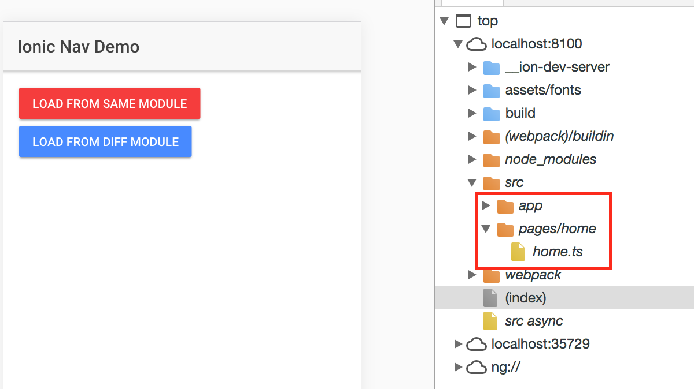

<body>
<br>
<br>


    <h1>Project Structure</h1>

  

<h3> Inside of the folder that was created, we have a typical Cordova project structure where we can install native plugins, and create platform-specific project files.</h3>


<br>

<h3>below is all the packeges that are created on you project</h3>


</body>